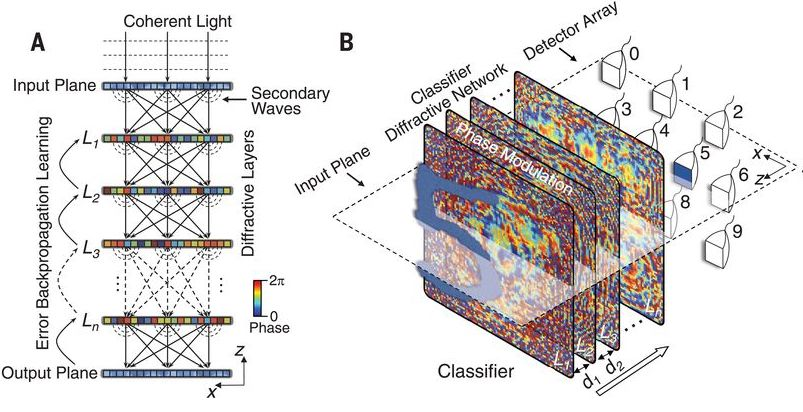
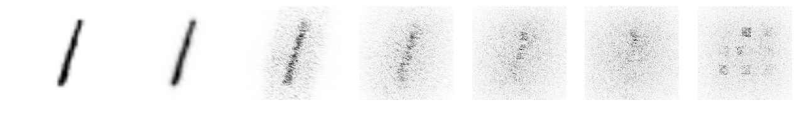
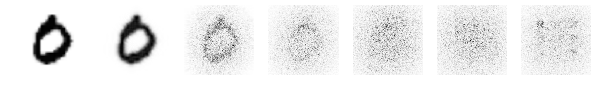
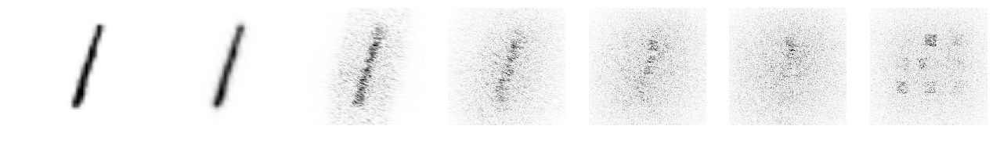
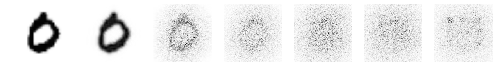

LightRidge Sample¶
Tutorial Authors: Yingjie Li, Cunxi Yu (University of Utah)
Recently, there are increasing efforts on optical neural networks and optical computing based DNNs hardware, which bring significant advantages for machine learning systems in terms of their power efficiency, parallelism and computational speed. Among them, free-space diffractive deep neural networks (D2NNs) , which is based on the light diffraction, feature millions of neurons in each layer interconnected with neurons in neighboring layers. This ultrahigh density and parallelism make this system possess fast and high throughput computing capability.
In this tutorial, we demonstrate that our LightRidge framework can be used to effectively implement and train D2NNs.
[1] Lin, Xing, Yair Rivenson, Nezih T. Yardimci, Muhammed Veli, Yi Luo, Mona Jarrahi, and Aydogan Ozcan. “All-optical machine learning using diffractive deep neural networks.” Science 361, no. 6406 (2018): 1004-1008.
[2] Li, Yingjie, Ruiyang Chen, Berardi Sensale-Rodriguez, Weilu Gao, and Cunxi Yu. “Real-time multi-task diffractive deep neural networks via hardware-software co-design.” Scientific reports 11, no. 1 (2021): 1-9.
D2NNs setups definition (visible range laser input)¶
wavelength = laser wavelenght (unit: meter)
pixel_size = pixel size of phase mask (unit: meter)
distance = diffraction distance (unit: meter)
depth = number of layers (default: 5 layers [1])
D2NNs setups training¶
batch_size = batch size (500)
lr = learning rate (0.1)
epochs = number of training iterations (5)
amp_factor = regularization factor (2)
Example: 5-Layer D2NN system proposed in [1] (Figure is from [1] Fig. 1)
wavelength = 5.32e-7
pixel_size = 0.000036
sys_size=200
distance=0.25
pad=50
depth=5
amp_factor=2
batch_size=500
lr=0.1
epochs=10
import os,csv,random
from time import time
import pathlib, argparse
import numpy as np
from tqdm import tqdm
import pandas as pd
import torch, torchvision
import torch.nn.functional as F
from torchvision import transforms
from torch.utils.data import DataLoader
import matplotlib.pyplot as plt
import pickle
Loading LightRidge Package¶
import lightbridge.data as dataset
import lightbridge.layers as layers
import lightbridge.utils as utils
import lightbridge.models as models
device="cuda:0"
print("training and testing on MNIST10 dataset")
load_dataset = dataset.load_dataset(batch_size = batch_size, system_size = sys_size, datapath = "./data")
train_dataloader, val_dataloader = load_dataset.MNIST()
lightridge.layers API supports three different forward functions that can be selected for users, based on the optical systems they have. Functions included 1) Fresnel 2) Sommerfeld 3) Fraunhofer approximations. Our pre-implemented is implemented using lightridge.layers API.
model = models.DiffractiveClassifier_Raw(wavelength=wavelength, pixel_size=pixel_size,
sys_size=sys_size, distance=distance, pad = pad,
num_layers=depth, amp_factor=amp_factor,Fresnel=True).to(device)
Network is constructed using Fresnel approximation
Network is constructed using Fresnel approximation
Network is constructed using Fresnel approximation
Network is constructed using Fresnel approximation
Network is constructed using Fresnel approximation
Network is constructed using Fresnel approximation
def train(model,train_dataloader, val_dataloader):
criterion = torch.nn.MSELoss(reduction='sum').cuda()
print('training starts.')
optimizer = torch.optim.Adam(model.parameters(), lr=lr)
scheduler = torch.optim.lr_scheduler.StepLR(optimizer,step_size=20, gamma=0.5)
for epoch in range(epochs):
log = [epoch]
model.train()
train_len, train_running_counter, train_running_loss = 0.0, 0.0, 0.0
tk0 = tqdm(train_dataloader, ncols=105, total=int(len(train_dataloader)))
for train_iter, train_data_batch in enumerate(tk0):
train_images, train_labels = utils.data_to_cplex(train_data_batch, device=device)
train_outputs = model(train_images)
train_loss_ = criterion(train_outputs, train_labels)
train_counter_ = torch.eq(torch.argmax(train_labels, dim=1), torch.argmax(train_outputs, dim=1)).float().sum()
optimizer.zero_grad()
train_loss_.backward(retain_graph=True)
optimizer.step()
train_len += len(train_labels)
train_running_loss += train_loss_.item()
train_running_counter += train_counter_
train_loss = train_running_loss / train_len
train_accuracy = train_running_counter / train_len
tk0.set_description_str('Epoch {}/{} : Training'.format(epoch, epochs-1))
tk0.set_postfix({'Train_Loss': '{:.2f}'.format(train_loss), 'Train_Accuracy': '{:.5f}'.format(train_accuracy)})
scheduler.step()
log.append(train_loss)
log.append(train_accuracy)
val_loss, val_accuracy = eval(model, val_dataloader)
log.append(val_loss)
log.append(val_accuracy)
return train_loss, train_accuracy, val_loss, val_accuracy, log
def eval(model, val_dataloader):
criterion = torch.nn.MSELoss(reduction='sum').cuda()
with torch.no_grad():
model.eval()
val_len,val_running_counter,val_running_loss = 0.0, 0.0, 0.0
tk1 = tqdm(val_dataloader, ncols=105, total=int(len(val_dataloader)))
for val_iter, val_data_batch in enumerate(tk1):
val_images, val_labels = utils.data_to_cplex(val_data_batch,device=device)
val_outputs = model(val_images)
val_loss_ = criterion(val_outputs, val_labels)
val_counter_ = torch.eq(torch.argmax(val_labels, dim=1), torch.argmax(val_outputs, dim=1)).float().sum()
val_len += len(val_labels)
val_running_loss += val_loss_.item()
val_running_counter += val_counter_
val_loss = val_running_loss / val_len
val_accuracy = val_running_counter / val_len
tk1.set_description_str('Validating')
tk1.set_postfix({'Val_Loss': '{:.5f}'.format(val_loss), 'Val_Accuarcy': '{:.5f}'.format(val_accuracy)})
return val_loss, val_accuracy
train(model, train_dataloader, val_dataloader)
Epoch 0/9 : Training: 100%|███| 120/120 [00:20<00:00, 5.73it/s, Train_Loss=0.28, Train_Accuracy=0.81483]
Validating: 100%|████████████████| 20/20 [00:02<00:00, 6.80it/s, Val_Loss=0.07260, Val_Accuarcy=0.95500]
Epoch 1/9 : Training: 100%|███| 120/120 [00:19<00:00, 6.14it/s, Train_Loss=0.07, Train_Accuracy=0.95938]
Validating: 100%|████████████████| 20/20 [00:02<00:00, 7.02it/s, Val_Loss=0.06925, Val_Accuarcy=0.95810]
Epoch 2/9 : Training: 100%|███| 120/120 [00:19<00:00, 6.17it/s, Train_Loss=0.06, Train_Accuracy=0.96353]
Validating: 100%|████████████████| 20/20 [00:02<00:00, 7.08it/s, Val_Loss=0.07265, Val_Accuarcy=0.95620]
Epoch 3/9 : Training: 100%|███| 120/120 [00:20<00:00, 5.84it/s, Train_Loss=0.06, Train_Accuracy=0.96713]
Validating: 100%|████████████████| 20/20 [00:03<00:00, 6.56it/s, Val_Loss=0.05647, Val_Accuarcy=0.96570]
Epoch 4/9 : Training: 100%|███| 120/120 [00:19<00:00, 6.08it/s, Train_Loss=0.05, Train_Accuracy=0.96923]
Validating: 100%|████████████████| 20/20 [00:02<00:00, 6.76it/s, Val_Loss=0.05655, Val_Accuarcy=0.96700]
Epoch 5/9 : Training: 100%|███| 120/120 [00:19<00:00, 6.09it/s, Train_Loss=0.06, Train_Accuracy=0.96818]
Validating: 100%|████████████████| 20/20 [00:03<00:00, 6.61it/s, Val_Loss=0.05789, Val_Accuarcy=0.96570]
Epoch 6/9 : Training: 100%|███| 120/120 [00:19<00:00, 6.22it/s, Train_Loss=0.05, Train_Accuracy=0.96978]
Validating: 100%|████████████████| 20/20 [00:02<00:00, 6.98it/s, Val_Loss=0.05078, Val_Accuarcy=0.96910]
Epoch 7/9 : Training: 100%|███| 120/120 [00:19<00:00, 6.13it/s, Train_Loss=0.05, Train_Accuracy=0.96920]
Validating: 100%|████████████████| 20/20 [00:02<00:00, 7.33it/s, Val_Loss=0.05996, Val_Accuarcy=0.96410]
Epoch 8/9 : Training: 100%|███| 120/120 [00:19<00:00, 6.05it/s, Train_Loss=0.06, Train_Accuracy=0.96725]
Validating: 100%|████████████████| 20/20 [00:03<00:00, 6.66it/s, Val_Loss=0.05767, Val_Accuarcy=0.96500]
Epoch 9/9 : Training: 100%|███| 120/120 [00:19<00:00, 6.06it/s, Train_Loss=0.05, Train_Accuracy=0.96865]
Validating: 100%|████████████████| 20/20 [00:02<00:00, 7.03it/s, Val_Loss=0.05653, Val_Accuarcy=0.96530]
Visualize Post-training Phase Parameters (weights of D2NNs) using LightRidge¶
model.phase_view(None)
Visualize Inference (Forward) of D2NNs using LightRidge¶
load_dataset = dataset.load_dataset(batch_size = 4, system_size = sys_size, datapath = "./data")
train_dataloader, val_dataloader = load_dataset.MNIST()
with torch.no_grad():
model.eval()
tk1 = tqdm(val_dataloader, ncols=105, total=int(len(val_dataloader)))
for val_iter, val_data_batch in enumerate(tk1):
val_images, val_labels = utils.data_to_cplex(val_data_batch,device=device)
val_outputs = model.prop_view(val_images)
break
 


